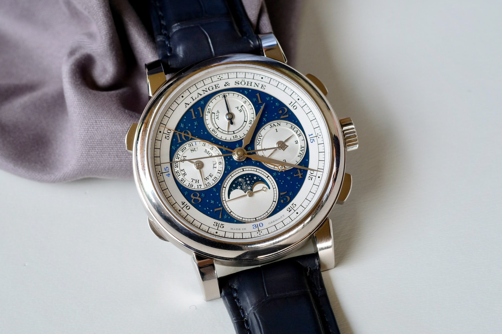
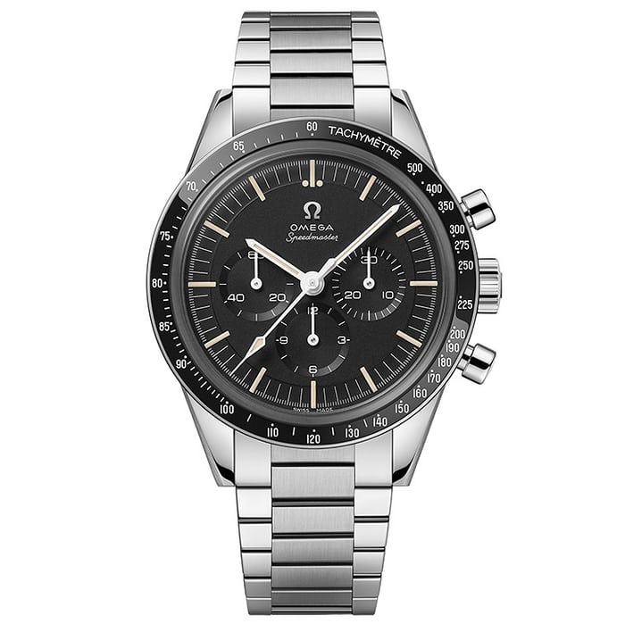
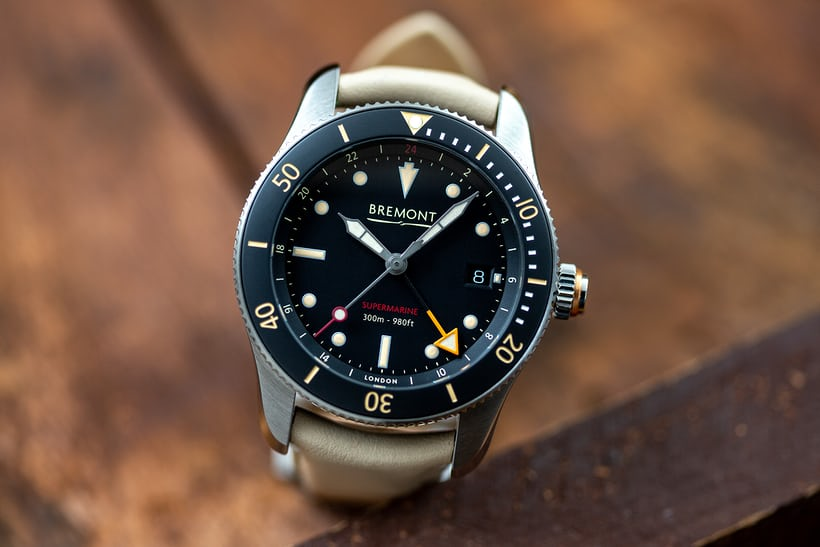
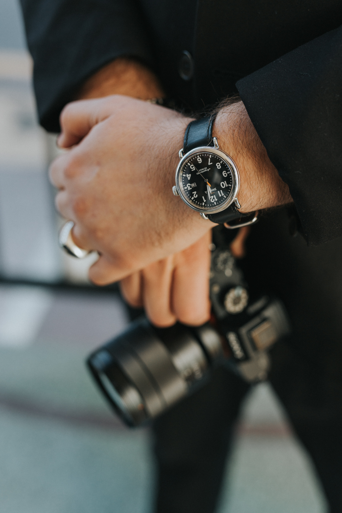

Watches can have many different special features, including calendars, chronographs and dive features.




- Calendar
- Some calendars just display the date of the month, and will need to be periodically adjusted at the end of the month, because the watch cannot tell how many days in the current month there are, and always goes up to 31 digits before resetting. There are also moonphase calendars, which displays the moons lunar cycle.
- Chronograph
- The chronograph can be used as a stopwatch, their primary function is the same for every watch that has a chronograph, but the way the chronograph is operated differes by the watch.
- Dive
- Dive watches are able to get wet and usually have an ATM rating, which describes how much watch pressure it can sustain.
- Calendar:
- ***A calendar complication displays the date in a number of different ways. A simple date display will show a number representing the day of the month in an aperture on the watch dial. Other calendar complications will show the month, year, and day of the week. Most calendar complications need to be manually corrected at the end of months that don't have 31 days. Annual calendars correct themselves automatically. Perpetual calendars take this a step further by correcting themselves for leap years automatically. Source: https://www.hodinkee.com/watch101/calendar
- Chronograph:
- ***Otherwise known as a stopwatch, a chronograph measures periods of time. A basic chronograph has a start/stop button and a reset button. Most chronographs measure seconds using a central seconds hand, while the time-only seconds hand is in a subdial. A split-seconds chronograph measures two periods of time that start together but end differently, such as a race. Source: https://www.hodinkee.com/watch101/chronograph
- Dive:
- ***This is any watch that fulfills the requirements of the international standard ISO 6425. The ISO states that for a watch to be called a diver's watch, it must be water resistant to a minimum of 100 meters; be legible in total darkness at 25 cm distance; have a unidirectional, rotating timing bezel; be antimagnetic to a resistance of 4,800 A/m (amperes per meter); and be able to resist a shock delivered by a plastic hammer of 3kg weight with an impact velocity of 4.43 m/s (meters per second) - there are other requirements as well. Source: https://www.hodinkee.com/watch101/divers-watch
Image credits:
- Calendar: https://www.hodinkee.com/articles/perpetual-calendars-perfect-for-february-29
- Chronograph: https://www.hodinkee.com/articles/our-favorite-chronographs-from-the-2020-new-releases
- Dive: https://www.hodinkee.com/articles/the-bremont-supermarine-s302-gmt
- Person4: https://unsplash.com/photos/P7zxvxJlW44
- Person6: https://unsplash.com/photos/PjODX5hruGQ
- Background Image: https://unsplash.com/photos/_kUxT8WkoeY